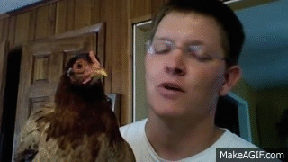

← back to home
Animals & Men
by David Katz
A psychologist looks at human beings and other animals, and discusses the processes that lie behind behaviour
Clever Hans - was reading tiny movements! So of course he's excellent at that. but not for you-know-what.
But this opens the doors to our tons of faults in interpreting animal's behaviours e.g police dogs. we trust them so much,
Lloyd Morgan - warned to not assume a higher level of explanation than was absolutely necessary. We may not interpret any case of animal behaviour as the outcome of higher mental faculties as long as it is possible to explain it in terms of simpler ones.
and also, what the hell would square root mean to a horse!! probably nothing.
it is very difficult to combat this tendency to interpret animal behaviour anthropomirphically.
puppy eyes means something to humans. May be dogs are just angry at us and that's how they look when angry. may be cats are always smiling at us and that's how they look. (I don't literally mean it but want to make a point.)
and also. red doesn't make bull angry. it's the movement of the cloth that does. animals are in general perceive movements easily compared to static scene and objects.
consider this, A Chimpanzee mother, with the infant in her arms, and suddenly she will lift it up, turn its head towards her, hold it high and gaze at it for a long time.
It is difficult to watch this without thinking of things which we can only really learn from human experience.
descartes says animals are pure automata. I had some same simple theory too. But it's little complecated. I understand it after reading this book.
stereotyped movements, displacement activity, hysteria,
stereotyped movements are not found in animals living under natural conditions. They are always the product of captivity. Captivity changes the effective enviroment completely and diorganizes animal's instinctive life.
if birds are forced to live with same gender, they will start showing homosexual behaviour. and when free adaptation of normal sex relation is no longer possible. meaning they continue their aquired homosexul sexual relation.
(random analogy. babies suck their thumb. they have that instinct.)
neurosis is the tribute which man pays for the control of his instincts in the service of a higher order of existance. behind every neurosis lies unresolved conflict. There are individual differences in tendency to develop neurosis, and these differences are heritable.
A wild animal never become neurotic in it's natural habitat. (I see.)
study of animal psychology ---> psycho-pathology. cuz there's limit to experiments we do on humans. but softer limits on animals. (so cruel, but I don't see any other way right now)
Formal education, school, is progressive removal of baby from its natural state.
development of language seem most charecteristic difference between men and animals.
It is at least equally important that what is required of the animal should not comflict with its drive and instincts. Most circus animals are made to perform in ways quite unrelated to their natural behaviour.
What consequence does this have for human education? : The child's own interests should be the starting point. Where they do not appear spontaneously, one should seek to awaken them.
Transfer of training
Experiment methods
Mind it, size standards, tempo standards and so on are different for different animals.
Sometimes we observe animals in lab,
sometimes we observe them in jungle,
sometimes we set cameras and observe them remotely.
weber's Law; just noticeble difference between 2 stimulie, is function of magnitude of stimuli. (makes sense.)
Perception
absolute threshold & minimum difference threshold
sensation --> stimulus
some birds can hear a sound, and reproduce it at the same pitch
is there something as intermodel senses?
constancy
color constancy in humans.
size constancy
perception of movements in animals
many animals can respond only to moving objects. they seem to have kind of central blindness to staitonary ones.
dogs, horses, deer, hares - have great difficulty in seeing shapes at rest. on the other hand, they surpass humans in observation of moving objects.
for example clever hans :)
most day birds seem to have accurate vision of stationary objects.
animals good at discriminating shapes at rest can often be recognised from their behaviour.
when a human is reading, perception happends only during the small pauses. not when eye is moving.
hen, balances it's head and so it's eyes stay staitonary and it can nicely see everything.

(most imagenet architectures seem to be designed for staionary object perception. and of course it's static image dataset. optical flow ones goes for movements. so when imagenet architectures are used in videos, they have this disadvantage. it's like using hen's eyes but with not balancing head feature. may be those architecture need some special features for movements. they don't probably need to be good at staionary perception like imagenet pipelines. )
some animals have instincts to respond to certain movements. If you run across the road, a dog wouldn't be able to resist barking towards you. some birds if they see some specific shape flying across, they would repond, thinking it's their prey.
selective perception
for example, giving preference to size before shape.
Animals and Space
Auditory orientation.
Homing of birds and no one yet fully knows (at least when this book was written) how the hell do they do it?
there's idea of organ sensitive to earth's magnetic field. but it's just a thought.
biological clocks and rhythms.
Needs Drives Instincts
behaviours arise from animal's needs. they are actions. not reactions.
eat,
sleep,
drink
physical as well as phychological needs
inborn needs / aquired needs
maniac's needs
momentarily dominant interest
strength of needs
animals do get satiated after drive is fulfilled
law of substitute for satisfying needs
The rat is not interestd in her young because they are hers, nor because they are rats... but because they are young beings, and everything to which this description is applicable is for the rat "her young" and will satisfy her instinct.
Two components
internal need, and external availability.
special appetites
some say your natural diet instincts are correlated to your body type as well, asthenic, athletic, pyknic
and remember the chaning of insect's habits across generation artificially
Social Psychology
Naturally one must not lose sight of the limitations inherent in anlogies between social animals and man. Animals lack historical awareness. Their societies therefore lack all those factors through which human society is influenced by the experience of past generations.
In chimpanzees social needs are so strong that they may refuse food for days if they are separated from each other.
... where mating is permanent but the sex impulse is not, there must be something in adition which holds the pair together.
sexual bonds primarily determine the foundation and duration of the family. But it is precisely the sex drive which conflicts with the creation of communities and disintegrates them when it is at full strength in the mating season. Communities survive through mating season only when other drives can keep the sex drive sufficiently under control or oversome it altogether.
there are families in animals, some cases are where bunch of families live together,
does touch mean anything to animals? is there any instinct for it? any pleasure points?
there are ranks in gouprs. e.g hen (I am thinking how do they remember who's got which rank? :/ do they have it noted somewhere (of course not))
readiness for cooperation increases with intelligence of the individual animal.
... we know that in some places blacbirds or nightingales are particularly noted for their singing. Perhaps this is the result of a special tradition which began with an outstanding accomplised blackbird.
what's needs vs instincts vs drives ? for now all seem same to me
Man and Animal
Man is capable of a kind of thinking where every step is fully under control. It is most clearly seen in scientific thinking. Such thinking is insightful in the highest degree. It is characterized by the greatest objectivity and greedom from emotional influences.
Man can stand back from himself and inspect himself. Nothing in the behaviour of animals suggests that they are able to do anything of this kind.
It may well be said that act of self-objectification was the start of man's fall from grace. Once he had taken this step he ceased to be merely a part of nature. He gained access to a new rality, the world of ideas.
Adjustment to the new social situation created by science has lagged behind the discoveries of science itself. It is almost as if science has become independent and progresses accrding to its own laws, leaving human need out of account.
With speech man has opened up for himself a new world, the world of mind, in which the animal has no place.
Words are the magic key to the treasures of man's history.
Aminals are endowed with a natural harmony for which man has to struggle; he is in his very nature divided. If he complies with the demands of morality, he must suppress his natural impulses; should he give way to them his conscience objects. Their suppression can lead to conflict, with its symptom, neurosis, which wild animals are spared.
What is the way out? We hear accusations made in the name of the emotions agains their adversary, reason. But there can be no return to the more primitive states we have left behind. To return would be to resurrect the world of magic, fantasy, and terror still with us in our dreams. Not by suppressing reason can man hope to find salvation, but by deliberate effort to reconcile his natural needs with the demands of his intellectual and social life.
why wud you have any interest in studying animals psychology?
to form reasoned sentiment towards them. Should I hate them for their behaviour? or should I feel sorry for their suffering? or should I help them? do they want to harm me when they run behind me?
stydying their basic psychology would help, I will finally be able to decide should I love dogs just cuz they are cute, and hate cats cuz they keep making angry faces?
and everybody should study psychology to cultivate humane interest and sentiment towards animals. One thing for sure, they are sentient.
is it the sleep that needs explaination or the waking state? (elimination of all external stimuli promotes sleep. )